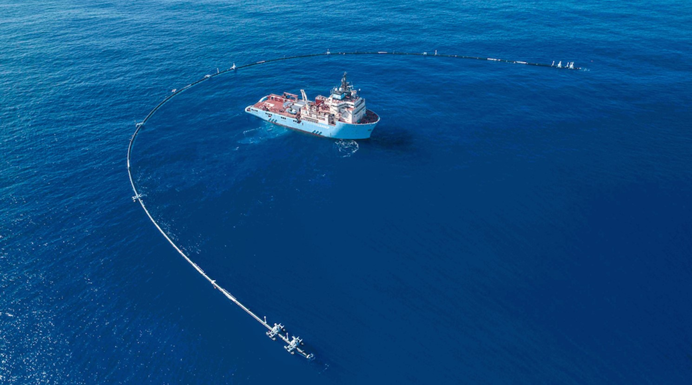

Liesje’s Skates, manufacturer of sustainable roller skates, is taking their products overseas with the release of their new campaign on tackling marine litter.
The manufacturer of the sustainably made roller skates, will take on a new project in which they will advocate against the pollution of the oceans by removing marine Litter from the plastic soup, of which the waste materials will be used in the production process of its roller skates. The Hague, The Netherlands – May 23, 2024 End of June, Liesje’s Skates will be launching the ‘Healthy Ocean’ campaign. This campaign has the aim to raise awareness around the polluting marine litter that ends up in the world’s oceans.
The campaign started as an initiative against the most polluted ocean in the world, the Pacific Gyre. The ocean’s currents cause for all marine and plastic litter to float in specific directions, thus ending up in oceans, such as the Pacific Gyre. Liesje’s Skates wants to remove marine litter from the most polluted oceans in the world in efforts to create a healthier ocean. While doing so, the organisation hopes to reach their own community of skaters, but also others, to join forces in the fight against marine litter. Liesje’s Skates beliefs this to be a valuable additional project to their current activities of providing sustainably made roller skates. The ‘Healthy Ocean’ Campaign will be managed by the organisation itself, while also working together with partner organisations in numerous activities. For starters, a team of volunteers from Liesje’s Skates will cooperate with the organisation The Ocean Cleanup, whom are active on removing plastic litter from the oceans. Additionally, Liesje’s Skates will host events in 57 countries on raising awareness concerning the current state and health of the planet’s oceans. The Ocean Cleanup has stated that they are looking forward to cooperate with Liesje’s Skates in lights of their revolutionary concept of sustainably made roller skates. Liesje’s Skates is excited to start their new projects. They encourage and welcome more partner organisations, volunteers and others in the future to join their mission towards a healthier ocean. https://cleanbeachinitiative.org/whats-the-most-polluted-ocean#:~:text=The%20most%20polluted%20ocean%20is,forces%20of%20the%20Earth's%20rotation. https://theoceancleanup.com/ https/:websiteURLLiesje’sSkates/HealthyOceanProjects.com